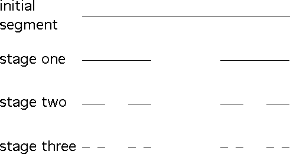

Start with a line segment of length 1.
The generating process is to remove the open middle third of each line segment.
Applying the process to the segment of length 1 gives two
segments of length
Applying the process to each of these segments gives four
segments of length
Continue.
|  |
| The initial segment and the first three stages of the Cantor middle thirds set. |
The Cantor middle thirds set is the limit of this process.
Equivalently, it is the intersection of all the stages.
The Cantor middle thirds set has several interesting properties.
Return to Background.